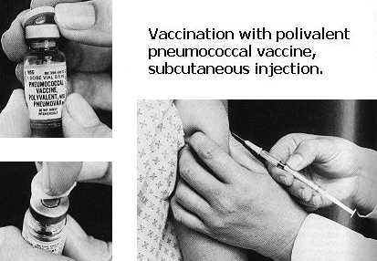

ALLERGOLOGY
The Allergy (after Greek
allos - another, ergon - I act) also called in many American texts "Hypersensitivity" is a collective term, designating the group of various typical immunopathological processes, which develop in sensitized organism of genetically predisposed individuals during boosted immune response to antigen, that earlier provoked sensitization. All these processes, in spite of difference in their mechanisms, as a rule, are manifested in hyperergic inflammation. The antigens insiting allergy are called allergens.In clinical language any adverse immune reaction, which is too intensive or qualitatively unusual, is referred to as "hypersensitivity", because it brings pathological sequels. Some writers insist that the term "hypersensitivity" is misleading, because usual and common immune responses also damage self-tissues (V. Kumar et al.; 1997). They even propose to substitute it for "immune-mediated tissue-damaging reactions". With no objections, we would like to stress that allergy, for practitioners, is a relatively defined term, applicable, first of all, to excessive or poorly regulated immune response, causing obvious tissue injury not justified by the scale of achieved defensive effect.
If allergic reaction is directed against autoantigens, it is called autoallergy. Autoallergy, under certain conditions, is able to cause autoimmune diseases. Allergy as experimental phenomenon was originally obtained by French scientists Ch. Richet and P. Portier (1902) during their romantic travelling by the waters of Mediterranean Sea, on the yacht of Grimaldi, Prince de Monaco. The phenomenon was reproduced as extraordinary strong systemic reaction in dogs, after repeated injection of sea anemones extract to them. Clinical cases of allergy were described long before this research. Ancient Egyptian chroniclers had reported that one of the Pharaohs perished due to bee's sting, with the manifestations resembling what we now call systemic anaphylaxis. Ph. Magandie (1809) described the cases of "idiosyncrasy" against some substances, indifferent to majority of patients, and explained it by individual specifics of nervous system in idiosyncratics.
At the beginning of XX century allergy, principally, was considered to be rare anomaly of body constitution. It is witnessed by the very origin of the word "allergy", coined by Austrian pediatrician C. von Pirquet (1906) to designate another (peculiar, not common) reactivity. But, nowadays, when about 10% of the Earth population, according WHO estimate, suffer from some allergic disorders, allergy is no longer regarded as seldom problem, but rather as common calamity! Among children the percentage of allergic individuals is even greater – up to 20% and sometimes even 30%.
Allergy is a problem of an organism, which is genetically predetermined to respond exceptionally for an antigenic challenge, ordinary for large groups of common people. It is necessary to emphasize, that allergy is not purely result of evil character of an allergen itself. But, some antigens, for example the components of ragweed, mites of worms provoke allergy in especially large contingents.
It seems that some considerable percentage of individuals, genetically predisposed to allergy, always existed in human populations. But, previously such persons rarely got a chance to display their peculiar reactivity. Now almost all of them have pretty "good" opportunity to show their specific abilities through the life long.
The reason for such "entire bringing to light" is greatly increased antigenic and haptenic burden of a modern man. First of all, it is a result of poor ecological situation. For example, in Australia in the middle of 70-ies the annual consumption of different food amendments, alien for human body (preservants, antioxidants, dyes, pollutants, and drugs) reached the level about 23 kilos per capita! The famous Russian internist Dr. Tareev once said, that the passion to swallow the tablets is an immanent feature of the modern man, as for the pre-historical it was to hold himself erect.
In good old times our ancestors spent all their life on relatively small territories, accustomed to constant antigenic environment. But, the contemporary individual travels a lot and willingly introduces innovations in this environment. And even without distant travel, living day by day somewhere in Peoria, State of Illinois, a person has excellent possibility to visit nearest supermarket for the direct contact with the allergens of all 5 oceans, including Aerial one. For example, nitrophenols, which are universally spread in air, water and food may act as haptens, cross-reacting with some autoantigens (brain proteins, MHC markers and immunoglobulins), causing various manifestations of autoallergy (K. Lauer, 1990).
But enough about poor ecology, the subject so often blamed by journalists and public activists, that this important reason of growing allergy seems banal.
There is also another factor directly related to increased incidence of allergy in XX century. And this matter is much less spoken about. But if we omit the discussion of this factor here – it can be interpreted as lack of proper medical self-criticism. The generations, which grew up allergic of inclined to hypersensitivity disorders, worldwide are those subjected to mass national programs of cohort immunization.
The authors of this text are staunch supporters of vaccination and serotherapy. Since E. Jenner in 1796 proposed active immunization against smallpox (induction of immune defenses by the administration of vaccines or toxoids), this disease has been eradicated worldwide. The annals of history keep the name of the last smallpox patient recovered – a cook from Somali. The effective vaccines are routinely and effectively used in many WHO countries for precaution of poliomyelitis, measles, mumps, rubella, whooping cough, diphtheria, tetanus, Haemophilus influenzae type b meningitis. In some countries there is obligatory immunization with BCG vaccine against tuberculosis. In endemic regions of the world there is also cohort immunization for prevention of abdominal typhus, cholera, yellow fever, hepatitis B, Japanese encephalitis and some other infections. Everyone is aware about the saving role of anti-rabies boosts. The means of active immunization – vaccines and toxoids (e.g. tetanic) and the means of passive immunization (provision of temporary protection by means of exogenously produced immune substances) – antisera and specific g - globulin (anti-diphtheria, anti-tetanic, anti-gangrenous, anti-hepatitis etc.) – virtually saved millions of lives and changed the history of civilization. Their creators, beginning from inventor of anti-diphtheria serum E. von Behring (1901) are listed in Nobel annals.

In post-Soviet Russia, as a result of non-professional campaign, organized by medically ignorant journalists against vaccination, a lot of parents refused to accept anti-diphtheria boosting for their children, misinterpreting mandatory vaccination as "violation of human rights". As a result, in big cities immediately resurrected diphtheria previously not observed by Russian doctors for decades. Some developing countries, regularly modernizing their armies, but still not performing cohort anti-tetanus vaccination, allow to tetanus plunder about 1 million of victims annually. These cans brightly demonstrate us how catastrophic could be the results of infectious diseases without great achievements of practical immunology – sera and vaccines. A new promising breakthrough in the field is the elaboration of vaccines against Protozoan diseases and viral infections, without usage of infectious agents, basing on anti-idiotypic principle (F. Stevenson, 1986).Now, re "the dark side of the Moon". On the backside of the medal, which world medicine has been awarded for the control over infections, one can read a sad word, written in bold letters: "ALLERGY".
In order to be effective, any vaccine mast be accepted by immune system seriously. Although vaccination does not provoke the disease against which it is aimed, for immune system boosting with DTP, for example, must be an equivalent of diphtheria, tetanus and pertussis, developing in one body at the same time. Quite a substantial challenge! A challenge of this kind gives to the immune system the chance to display its abilities, not excluding the hidden inclination to allergy. Not only natural, but also jatrogenic methods of defense against diseases are imperfect. That's why, immunization is a weapon for cautious use in experienced hands.
Besides vaccination, during last 70 years there is rapid progress in medical application of different antigenic preparations, injected via parenteric route (blood and blood products, parenteric food, peptide drugs etc). They are not inactivated in gut and carry antigenic epitopes.
The wave of allergy accrued in parallel with these medical changes. It is very characteristic, that both anaphylaxis and immune complex reactions in clinical conditions were described for the first time in children treated by anti-diphtheric sera (C. von Pirquet, O. Schick, 1902), as adverse effects of serotherapy.
Practical conclusion drawn from here is the necessity to follow in details all limitations, precautions and counterindications, which are recommended by Advisory Committee on Immunization Practices and other similar authorities. "Boosting for boosting" is not correct way of prophylaxis.
To meet these recommendations, medical doctor needs broad erudition in Immunopathology. It is essential to know the great variance of autoimmune and allergic disorders. It is for this purpose, that we have included in current section of the book not only general description of allergic mechanisms, but also multiple concrete examples of immunopathological disorders in various organs and systems.
NEXT CHAPTER
OR